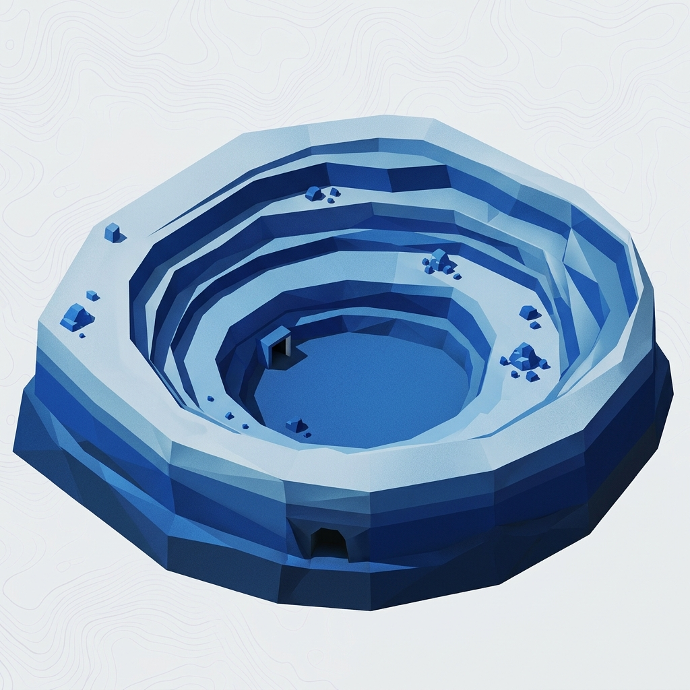
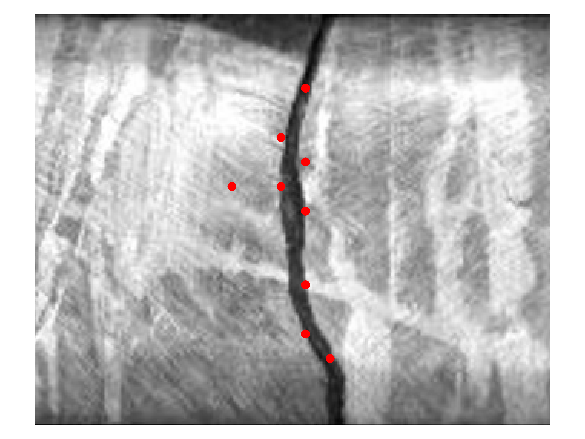
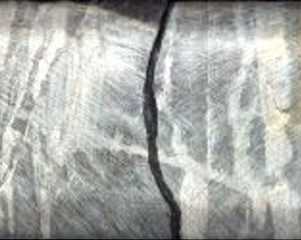

We combine artificial intelligence, geotechnical expertise, and decades of project experience to help mining companies discover, evaluate, and develop projects more effectively.
From computer vision and 3D geospatial analysis to project delivery and technical advisory, we transform mining data into better decisions.

Automatically identify discontinuities, veins, fracture networks and structural controls from images and point clouds.
Years of Mining & Energy Experience
Projects Managed Across Canada and Africa
Research-Driven Innovation
Mining Research Collaboration
We combine advanced AI, mining expertise, geotechnical engineering and project execution to help organisations make better decisions from exploration through operations.
Geological interpretation, geotechnical characterisation, computer vision, point-cloud analytics and digital twins.
Technical reviews, audits, digital transformation planning, research programmes and independent advisory services.
Project planning, coordination, stakeholder management, technical leadership and project controls for mining and energy developments.
From exploration to operations.
Advanced computer vision and geospatial intelligence for mining.

Beyond technology, our team brings decades of project leadership experience across mining, oil & gas, infrastructure, research and innovation initiatives.
With experience supporting more than $80 billion in projects across Canada, Africa and the US we help organisations move from technical understanding to successful delivery.
Core imagery interpretation, lithology classification, and geological analytics.
Automatic detection of discontinuities, veins and fractures.
Point clouds, digital twins, and 3D modelling.
AI solutions built for real-world mining workflows.
J Beulah Tech works alongside mining companies as a technology developer, technical advisor, and research partner. We help organizations deploy practical AI that creates measurable value across the entire mining lifecycle.
Research collaborations, custom technology development, AI initiatives and project advisory.